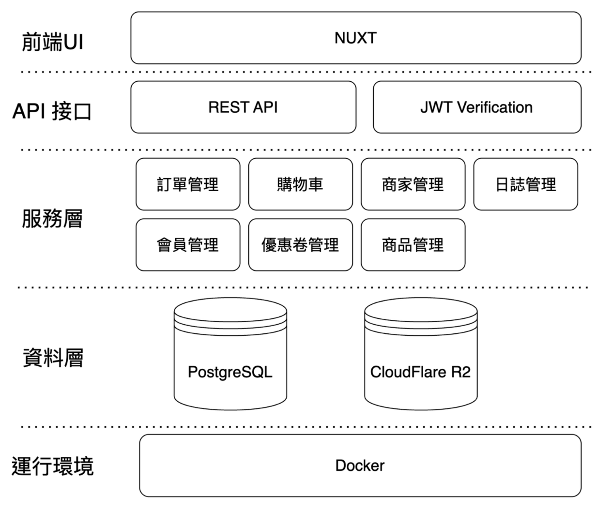

閱森書店 | 線上購書平台
多人協作開發：整合使用者、賣家與管理員的三方全端電商系統
專案簡介 | Project Overview
- 系統定位：整合使用者、賣家與管理員需求的三方全端電商平台。
- 核心技術：基於 Nuxt 3 框架、PostgreSQL 資料庫與 Prisma ORM 開發。
- 功能亮點：包含完整購物流程、營收數據圖表、RBAC 權限管理與操作日誌。
我的開發角色 | Development Role
- 前端 UI/UX 實作：使用 Nuxt 框架建立響應式介面，包含動態購物車、結帳流程與訂單詳情頁等等。
- API整合：負責前後端數據對接，確保從使用者操作到資料庫異動的流程穩定。
系統角色功能展示 | System Showcase

系統架構 | System Architecture
